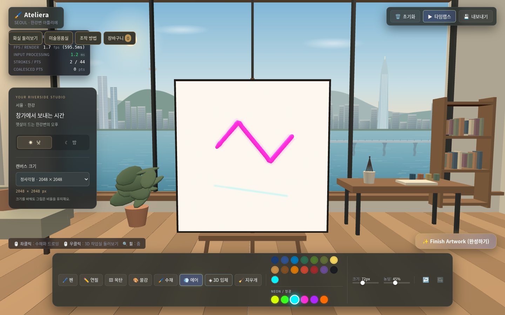
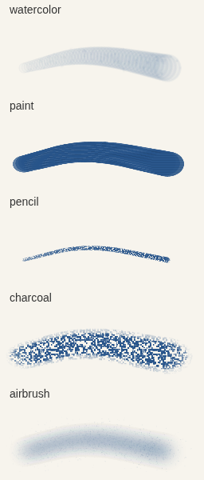
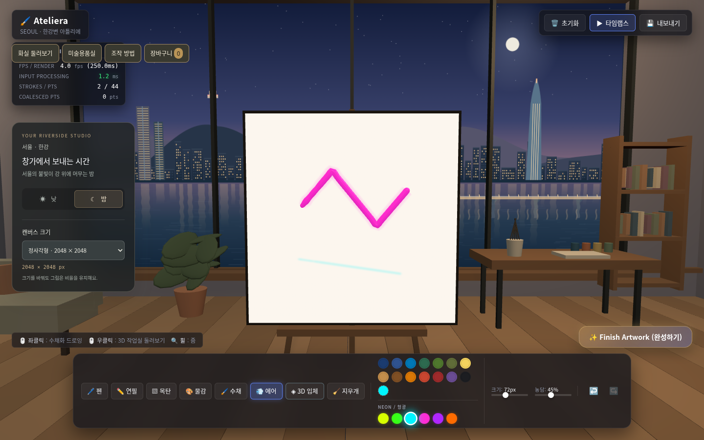
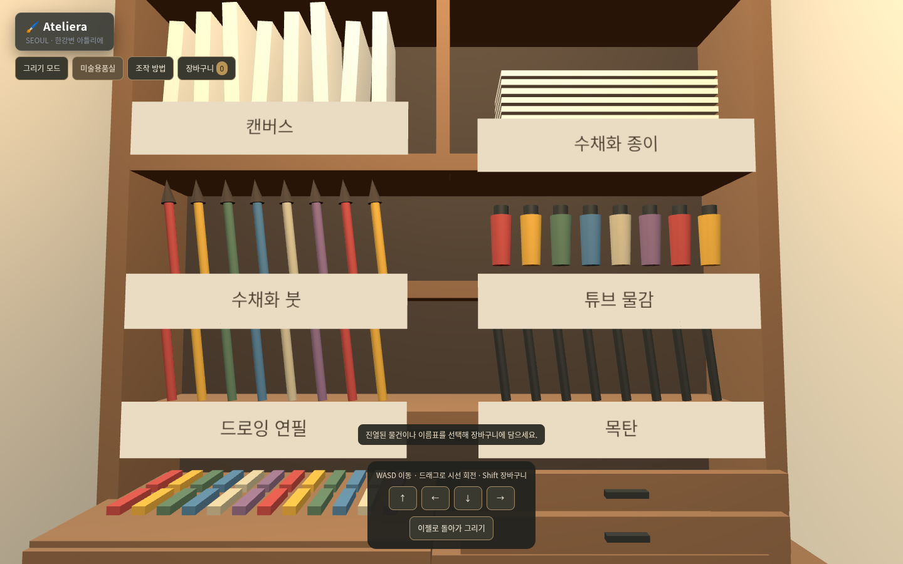
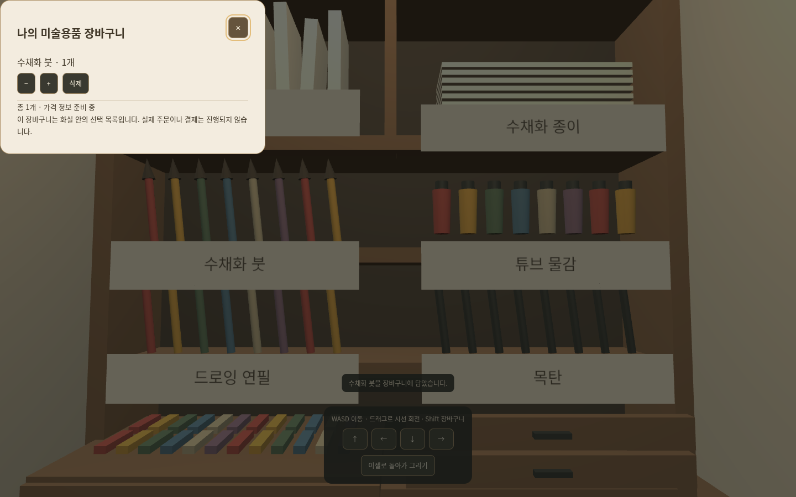

Ateliera
그림을 그리고 · 공간을 걷고 · 재료를 고르는 3D 아틀리에

- 브라우저에서 만나는 서울의 작업실
- 창작과 공간 탐색을 하나의 흐름으로
컨셉: 창작이 머무는 공간
서울의 한강 풍경을 배경으로, 그림 작업과 재료 선택을 연결합니다.
- 창작 | 재료마다 다른 붓결과 실제 3D 입체 붓질
- 탐색 | 낮과 밤이 바뀌는 화실을 직접 걸어 둘러보기
- 선택 | 진열된 용품을 살펴보고 나의 장바구니에 담기
그림의 질감부터 입체 붓질까지
수채·물감·연필·목탄·스프레이의 재료 차이를 표현합니다.

- 수채: 맑은 번짐과 안료가 모이는 가장자리
- 물감: 불투명한 색과 두께감 있는 2D 붓결
- 연필·목탄: 미세한 흑연 결과 거친 가루 입자
- 에어브러시: 가장자리까지 옅어지는 미세 분사
- 3D 입체: 튜브 형태의 실제 메쉬와 네온 발광
- 펜 · 필압/기울기 반응 · 사용자 색상 · 네온 6종
서울 한강변, 낮과 밤의 화실
통창 너머 풍경과 따뜻한 원목 공간이 작업의 분위기를 만듭니다.

- 낮 / 밤 전환: 풍경, 조명, 강물 반사 변화
- 캔버스 선택: 정사각형 · 가로형 · 세로형 · 작은 정사각형
- 그림 비율을 유지하는 크기 변경 · 실행 취소/다시 실행 · 타임랩스
왼쪽 문 너머의 미술용품실
원목 진열장에 재료를 세워 두고, 손이 닿는 공간을 구성했습니다.

- 실제 출입구와 열리는 문으로 화실과 연결
- WASD 이동 · 화면 드래그로 시선 회전
- 벽·가구 충돌 검사와 터치 이동 버튼
- 캔버스 · 수채화 종이 · 붓 · 물감 · 연필 · 목탄
- 물건과 이름표를 선택해 상품 상세 확인
살펴보고, 나의 장바구니에 담기
물건 위에 마우스를 올리면 안내와 담기 말풍선이 표시됩니다.

- 상품 상세: 이름과 재료 설명 확인
- Shift: 장바구니 열기 / 닫기
- 용품 담기 · 수량 변경 · 개별 삭제
- 새로고침 후에도 브라우저에 선택 목록 유지
- 가격·외부 구매 연결은 보류 중
- 실제 주문·결제가 아닌 재료 선택 체험
조작 방법
키보드와 마우스, 모바일 화면 버튼으로 이동합니다.
| 조작 | 기능 |
|---|---|
| WASD / 방향키 | 앞·뒤·좌·우 이동 |
| 화면 드래그 | 마우스 또는 터치로 시선 회전 |
| 물건 클릭 / E | 상품 상세 보기 · 문 열기 |
| Shift | 장바구니 열기 / 닫기 |
| Esc | 창 닫기 / 이동 모드에서 그리기로 복귀 |
| 화면 화살표 | 누르고 있는 동안 이동 |
| 미술용품실 버튼 | 진열장 앞으로 바로 이동 |
작업과 탐색이 이어지는 경험
그리기로 언제든 돌아올 수 있고, 선택한 재료는 남아 있습니다.
- 01 | 캔버스 크기와 낮·밤 분위기 선택
- 02 | 재료별 브러시와 입체 붓질로 작업
- 03 | 둘러보기 모드로 전환하고 왼쪽 문 열기
- 04 | 미술용품실에서 물건을 살펴보고 담기
- 05 | 이젤로 복귀해 작업을 이어가고 작품 완성
현재 구현 범위와 다음 연결
화실 창작과 재료 선택의 기본 경험을 구현했습니다.
- 구현 완료 | 브러시·입체·네온, 낮/밤, 캔버스 크기
- 구현 완료 | 이동·문·진열장·상품 상세·장바구니
- 검증 완료 | 브라우저 플레이, 모바일 확인, 테스트 28개·빌드
- 보류 | 실제 상품 가격과 외부 판매처 링크
- 추후 범위 | 상품별 상세 데이터와 주문·결제 연결